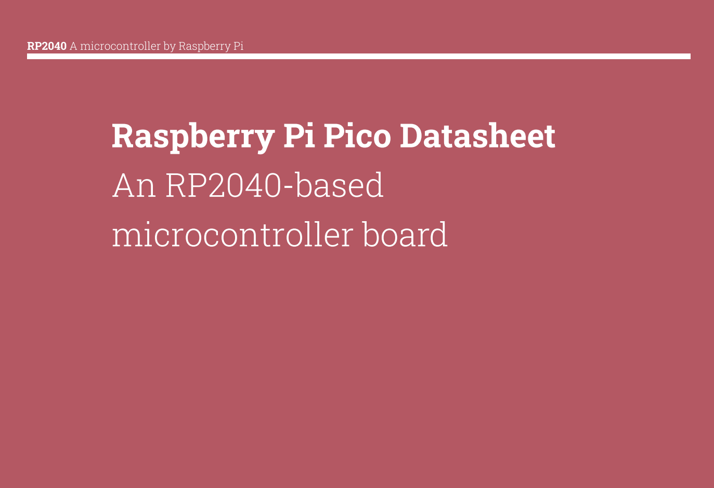
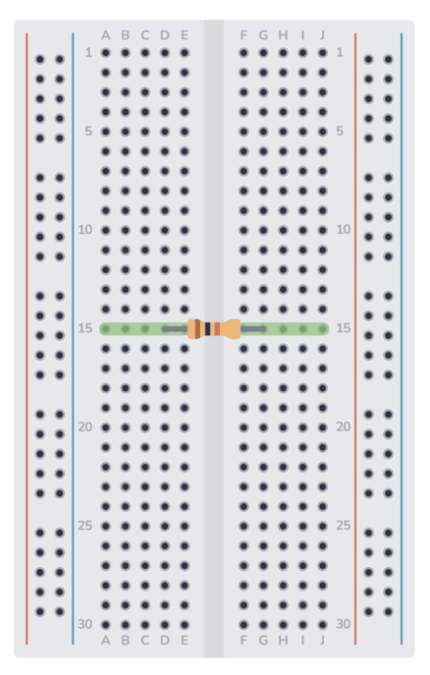
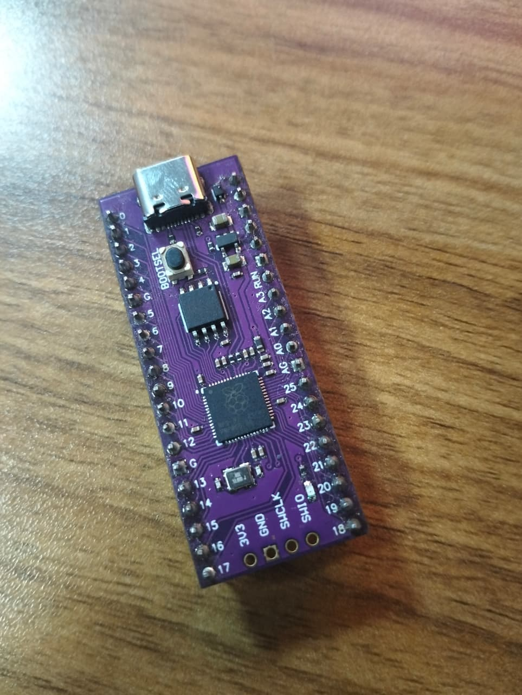

Week 2 (Wednesday): Hardware Fundamentals
Objective
Establish a foundational understanding of embedded hardware architecture. The goal was to evaluate chip selection for specific project scopes, and set up the physical prototyping environment.
Hardware & Tools Evaluated
- Microcontroller: Raspberry Pi Pico (Custom RP2040 variant with USB-C)
- Prototyping: Breadboards
- Software/IDE: Thonny, Arduino IDE
- Languages: C, C++, MicroPython
System Architecture & Hardware Theory
Before writing any firmware, we broke down the physical compute layer and how to make architectural decisions.
1. The Compute Hierarchy
- Microcontrollers (e.g., Raspberry Pi Pico): Dedicated, real-time control. Bare-metal execution without an operating system.
- Microprocessors: The central processing unit (CPU) alone, requiring external memory and peripherals to function.
- Microcomputers (e.g., Raspberry Pi 4): Full System-on-Chip (SoC) running an OS (like Linux), used for heavy processing.
2. Chip Selection: Pico W vs. ESP32
We analyzed board selection based on the engineering principle of "Simplicity vs. Overkill". While the ESP32 is a powerhouse with built-in Wi-Fi and Bluetooth, a standard Raspberry Pi Pico is often chosen for its simplicity and deterministic I/O when wireless communication isn't strictly necessary.
3. Physical Interfacing
- Datasheets & Documentation: The absolute source of truth for pinouts, voltage tolerances, and logic levels.

- PCBs & Breadboards: Understood the internal rail structure of a breadboard to transition from theoretical schematics to physical circuits before eventually printing custom Printed Circuit Boards (PCBs).

Hardware Spotlight
Here is an MCU.

Firmware Environment
We established the software bridge to the hardware. We are using MicroPython via the Thonny IDE. This allows for rapid prototyping and testing of logic before optimizing in C.
Interestingly, we also discussed the capability of running Machine Learning directly on these constrained chips (TinyML), opening doors for edge AI applications.
Capstone Definition
We defined the student capstone project: An End-to-End RFID Access Control System. All the hardware fundamentals covered will directly apply to building the access logic, physical wiring and micro-processing required for this system.